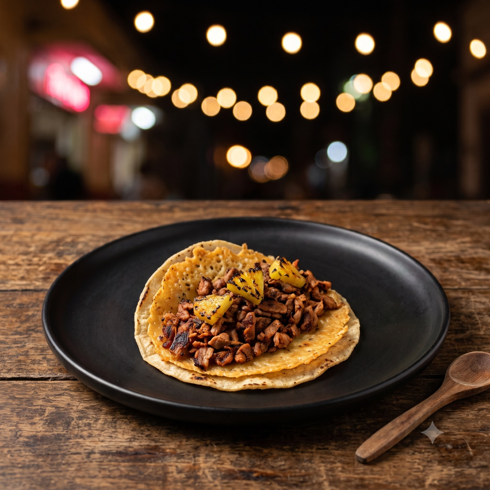
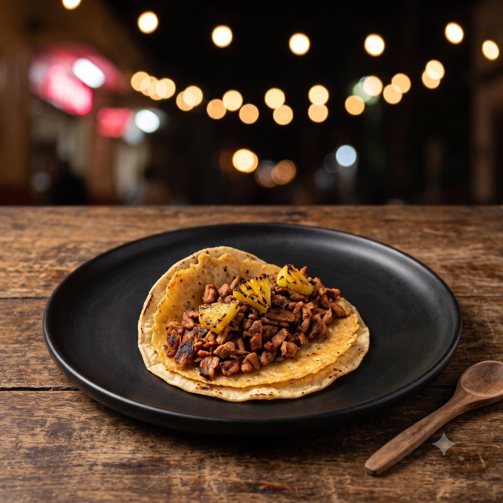
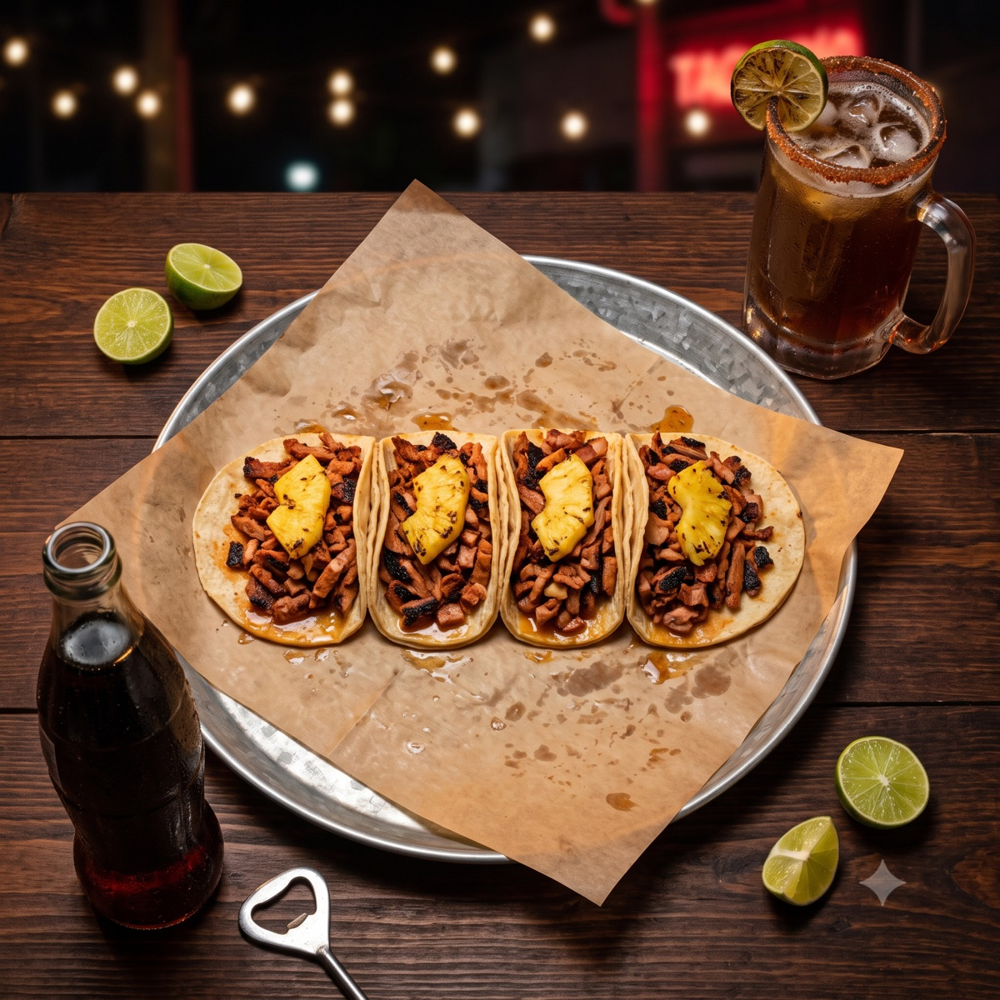
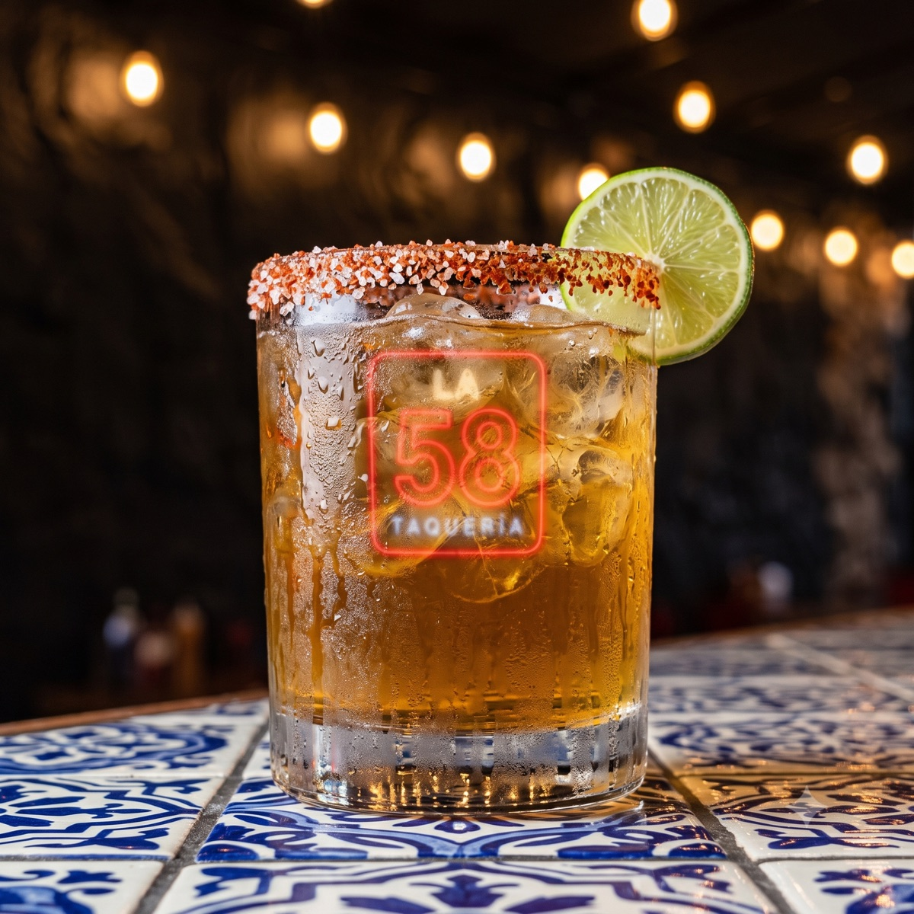
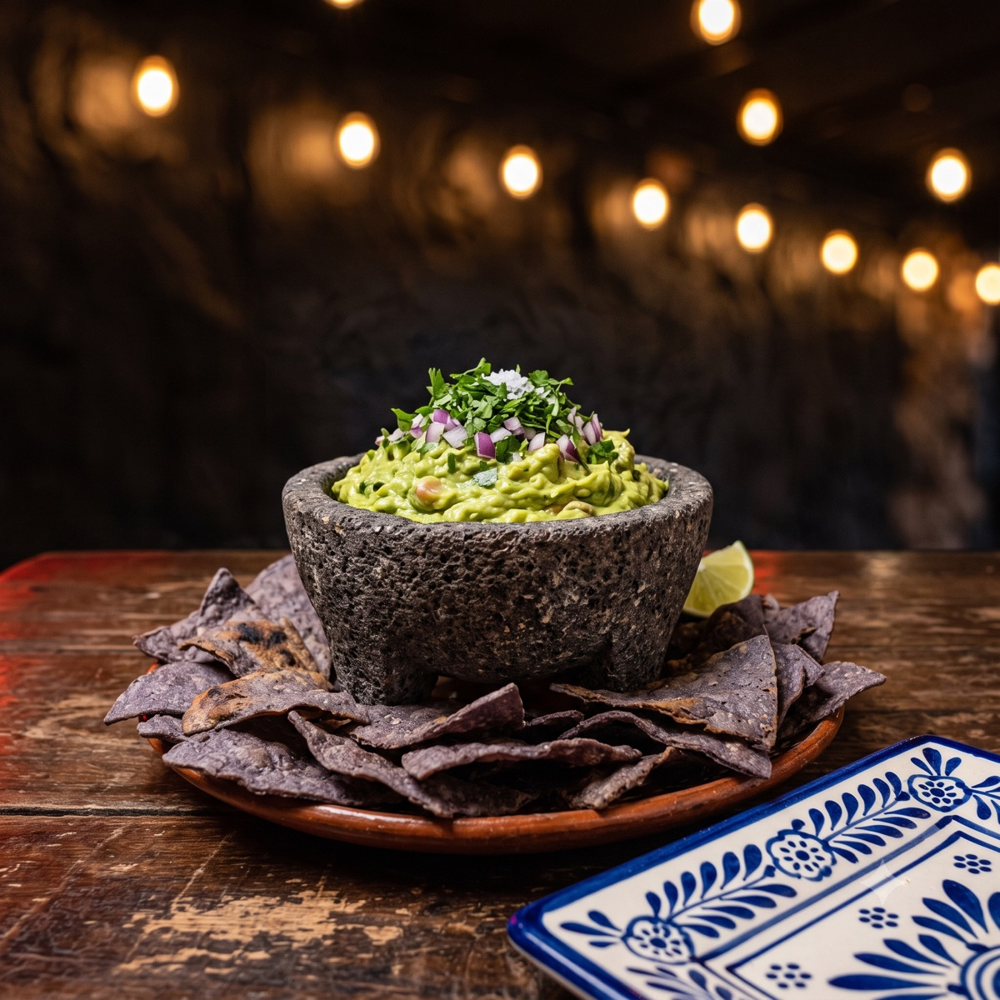

005 — LA FACHADA · el letrero es el logo

001 — EL VELADOR · el taco de la casa

004 — EL TROMPO · el oficio

002 — PASTOR · la base

003 — LA MADRUGADA · el combo insignia

006 — MICHELADA · bebida fría

007 — GUACAMOLE · para la mesa

008 — LA COSTRA · contenido del lunes

009 — LA TERRAZA · la noche
SET 001 GENERADO CON GEMINI (NANO BANANA 2) · MASTERS 2048×2048 EN fotos/ · WEB 1200PX EN fotos/web/ · USO: CAJAS DE LUZ, MENÚ IMPRESO, WEB, FEED · OJO: LLEVAN MARCA DE AGUA ✦ DE GEMINI EN LA ESQUINA — RECORTAR ANTES DE IMPRIMIR.